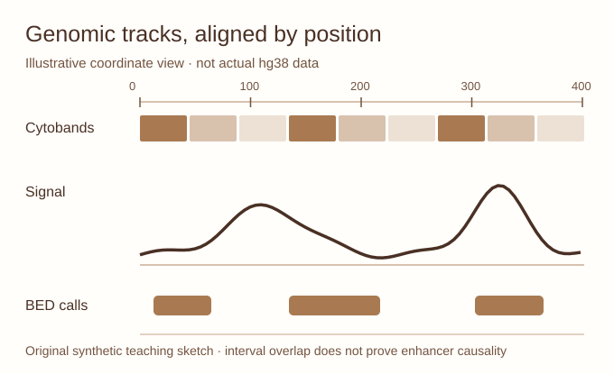

Compare fictional BED annotations, bedGraph quantitative signal and a small tabular contact matrix. Load your own small local text files without uploading anything. Then explore a public Gosling example online.

Synthetic data only; BED/bedGraph are zero-based, half-open. No physical 3D structure is implied. On narrow screens, swipe the plot horizontally to read its annotations.
Limitations: the local viewer parses small plain-text files only. Indexed BigWig/BigBed and binary .hic/.cool/.mcool are not parsed. For large data, use a compatible Gosling URL/data source or HiGlass tileset service. Never upload unpublished or identifiable material to public servers.